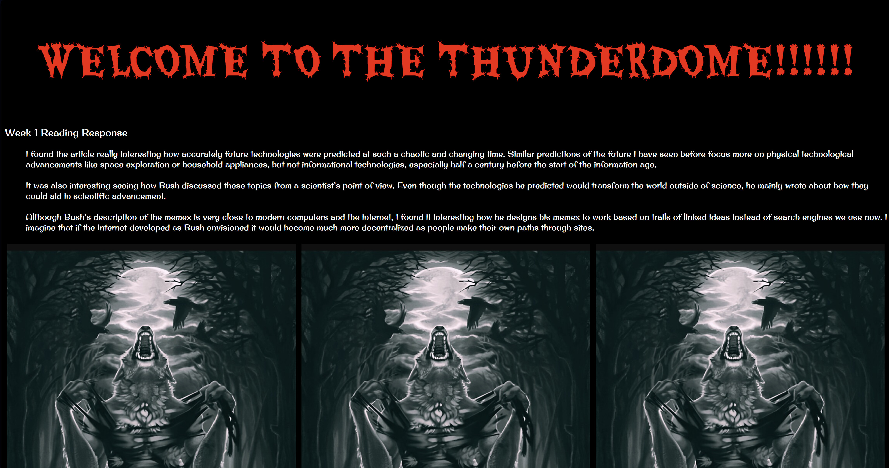
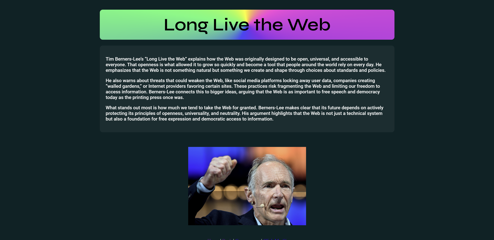
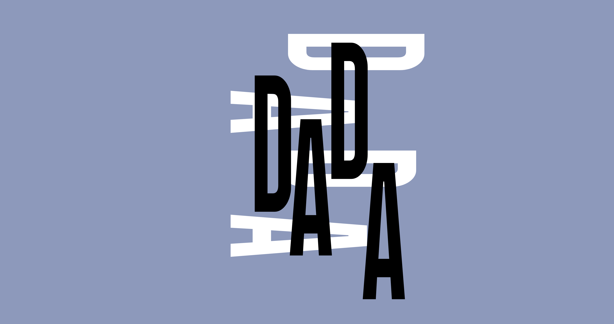
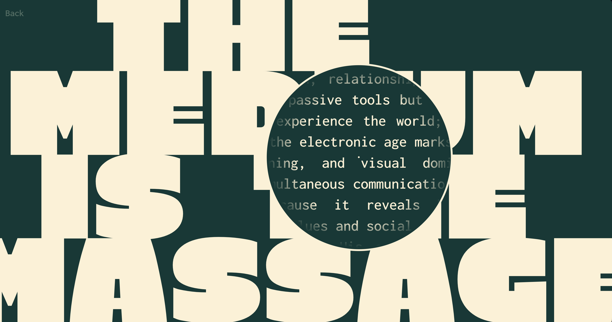
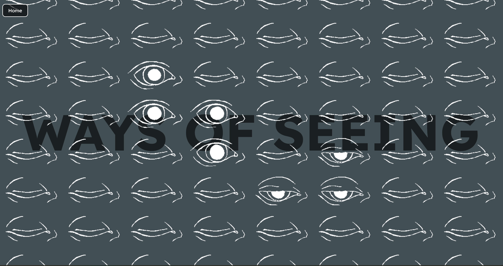
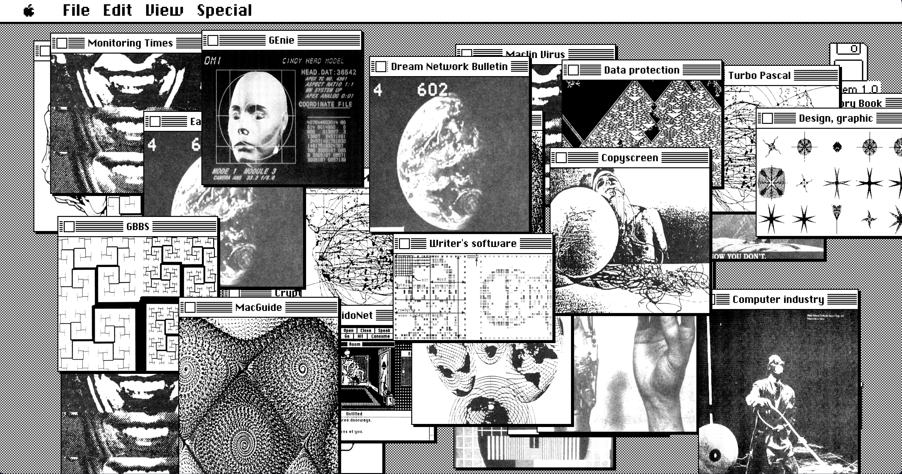
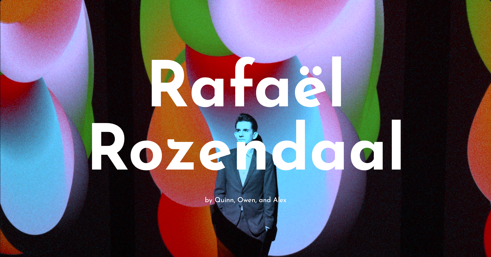

Week 1

For week 1, I learned how to use images, different fonts, and div classes to make multiple images. I tried to make a very weird and edgy but amateur looking page with the three alpha wolves.
Week 2

For week 2, I learned keyframes to make a spinning rainbow gradient behind the title. I also used the nav tag to make a simple navigation and used an iframe to embed an html game I found.
Week 3

For week 3, we recreated posters from Dada and Rand. I looked for similar fonts to the dada poster and manually adjusted the placement of each letter to recreate the poster.
Week 4

I am pretty proud of the page I made for week 4. I wanted to have my reading response "embedded" into the title of the work, which I did by using some javascript to hide the title around the mouse and show my response.
Week 5

For week 5, I manipulated a gif of an eye blinking to have 3 gifs of it opening, closing, and held closed. I then used javascript and classes to make modular eyes that open on hover and assigned them to different episodes.
Week 6

For week 6, I used ChatGPT to take the tech-related words from a Whole Earth Archive listing and screenshotted everything in that listing that looked cyberpunk or computery. I then used them in a recreation of an early macintosh computer desktop, from the icons and ui to the design of the windows.
Net.art

For the net.art presentation, me and my teammates mimicked a Rafael Rosendaal artwork that splits the page upon clicking.